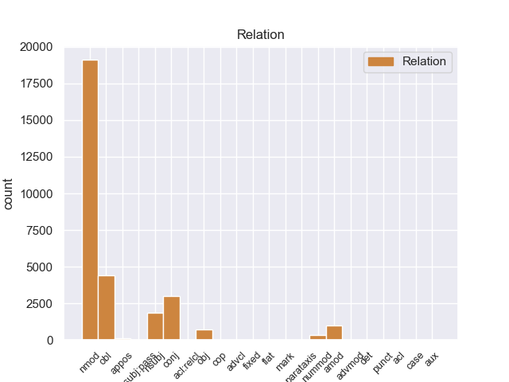
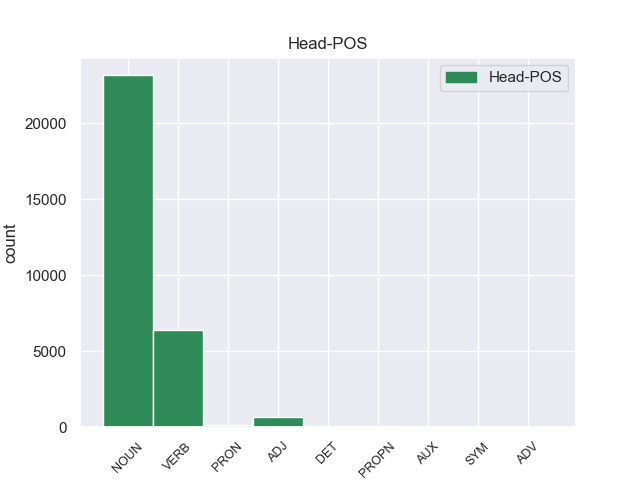
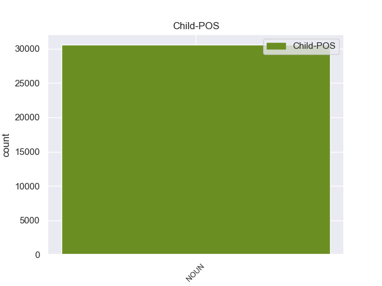

Distribution of features within this leaf



Agreement Rules sorted by frequency.
- When the dependent token is the nominal modifier(nmod) of the head token, and the dependent token is NOUN.
1 Esta _ _ _ _ 0 _ _ _
2 teoría _ _ _ _ 0 _ _ _
3 se _ _ _ _ 0 _ _ _
4 avenía _ _ _ _ 0 _ _ _
5 bien _ _ _ _ 0 _ _ _
6 con _ _ _ _ 0 _ _ _
7 la _ _ _ _ 0 _ _ _
8 creencia _ _ _ _ 0 _ _ _
9 de _ _ _ _ 0 _ _ _
10 el _ _ _ _ 0 _ _ _
11 Romanticismo _ _ _ _ 0 _ _ _
12 en _ _ _ _ 0 _ _ _
13 un _ _ _ _ 0 _ _ _
14 volkgeist _ _ _ _ 0 _ _ _
15 , _ _ _ _ 0 _ _ _
16 " _ _ _ _ 0 _ _ _
17 genio _ _ _ _ 0 _ _ _
18 o _ _ _ _ 0 _ _ _
19 espíritu espíritu NOUN _ Gender=Masc|Number=Sing 0 _ _ _
20 de _ _ _ _ 0 _ _ _
21 el _ _ _ _ 0 _ _ _
22 pueblo pueblo NOUN _ Gender=Masc|Number=Sing 19 nmod _ _
23 " _ _ _ _ 0 _ _ _
24 , _ _ _ _ 0 _ _ _
25 autor _ _ _ _ 0 _ _ _
26 colectivo _ _ _ _ 0 _ _ _
27 y _ _ _ _ 0 _ _ _
28 anónimo _ _ _ _ 0 _ _ _
29 de _ _ _ _ 0 _ _ _
30 una _ _ _ _ 0 _ _ _
31 poesía _ _ _ _ 0 _ _ _
32 nacional _ _ _ _ 0 _ _ _
33 . _ _ _ _ 0 _ _ _
1 En _ _ _ _ 0 _ _ _
2 1991 _ _ _ _ 0 _ _ _
3 , _ _ _ _ 0 _ _ _
4 como _ _ _ _ 0 _ _ _
5 ya _ _ _ _ 0 _ _ _
6 está _ _ _ _ 0 _ _ _
7 indicado indicado VERB _ Gender=Masc|Number=Sing|VerbForm=Part 0 _ _ _
8 en _ _ _ _ 0 _ _ _
9 el _ _ _ _ 0 _ _ _
10 párrafo párrafo NOUN _ Gender=Masc|Number=Sing 7 obl _ _
11 anterior _ _ _ _ 0 _ _ _
12 , _ _ _ _ 0 _ _ _
13 se _ _ _ _ 0 _ _ _
14 creó _ _ _ _ 0 _ _ _
15 un _ _ _ _ 0 _ _ _
16 equipo _ _ _ _ 0 _ _ _
17 ad _ _ _ _ 0 _ _ _
18 hoc _ _ _ _ 0 _ _ _
19 para _ _ _ _ 0 _ _ _
20 averiguar _ _ _ _ 0 _ _ _
21 como _ _ _ _ 0 _ _ _
22 se _ _ _ _ 0 _ _ _
23 podía _ _ _ _ 0 _ _ _
24 desarrollar _ _ _ _ 0 _ _ _
25 el _ _ _ _ 0 _ _ _
26 Dialogo _ _ _ _ 0 _ _ _
27 Social _ _ _ _ 0 _ _ _
28 , _ _ _ _ 0 _ _ _
29 este _ _ _ _ 0 _ _ _
30 equipo _ _ _ _ 0 _ _ _
31 estaba _ _ _ _ 0 _ _ _
32 formado _ _ _ _ 0 _ _ _
33 por _ _ _ _ 0 _ _ _
34 representantes _ _ _ _ 0 _ _ _
35 de _ _ _ _ 0 _ _ _
36 todas _ _ _ _ 0 _ _ _
37 las _ _ _ _ 0 _ _ _
38 organizaciones _ _ _ _ 0 _ _ _
39 relacionadas _ _ _ _ 0 _ _ _
40 con _ _ _ _ 0 _ _ _
41 CES _ _ _ _ 0 _ _ _
42 , _ _ _ _ 0 _ _ _
43 UNICE _ _ _ _ 0 _ _ _
44 y _ _ _ _ 0 _ _ _
45 CEEP _ _ _ _ 0 _ _ _
46 ; _ _ _ _ 0 _ _ _
1 Esta _ _ _ _ 0 _ _ _
2 teoría _ _ _ _ 0 _ _ _
3 se _ _ _ _ 0 _ _ _
4 avenía _ _ _ _ 0 _ _ _
5 bien _ _ _ _ 0 _ _ _
6 con _ _ _ _ 0 _ _ _
7 la _ _ _ _ 0 _ _ _
8 creencia _ _ _ _ 0 _ _ _
9 de _ _ _ _ 0 _ _ _
10 el _ _ _ _ 0 _ _ _
11 Romanticismo _ _ _ _ 0 _ _ _
12 en _ _ _ _ 0 _ _ _
13 un _ _ _ _ 0 _ _ _
14 volkgeist _ _ _ _ 0 _ _ _
15 , _ _ _ _ 0 _ _ _
16 " _ _ _ _ 0 _ _ _
17 genio _ _ _ _ 0 _ _ _
18 o _ _ _ _ 0 _ _ _
19 espíritu espíritu NOUN _ Gender=Masc|Number=Sing 0 _ _ _
20 de _ _ _ _ 0 _ _ _
21 el _ _ _ _ 0 _ _ _
22 pueblo _ _ _ _ 0 _ _ _
23 " _ _ _ _ 0 _ _ _
24 , _ _ _ _ 0 _ _ _
25 autor autor NOUN _ Gender=Masc|Number=Sing 19 conj _ _
26 colectivo _ _ _ _ 0 _ _ _
27 y _ _ _ _ 0 _ _ _
28 anónimo _ _ _ _ 0 _ _ _
29 de _ _ _ _ 0 _ _ _
30 una _ _ _ _ 0 _ _ _
31 poesía _ _ _ _ 0 _ _ _
32 nacional _ _ _ _ 0 _ _ _
33 . _ _ _ _ 0 _ _ _
1 En _ _ _ _ 0 _ _ _
2 1991 _ _ _ _ 0 _ _ _
3 , _ _ _ _ 0 _ _ _
4 como _ _ _ _ 0 _ _ _
5 ya _ _ _ _ 0 _ _ _
6 está _ _ _ _ 0 _ _ _
7 indicado _ _ _ _ 0 _ _ _
8 en _ _ _ _ 0 _ _ _
9 el _ _ _ _ 0 _ _ _
10 párrafo _ _ _ _ 0 _ _ _
11 anterior _ _ _ _ 0 _ _ _
12 , _ _ _ _ 0 _ _ _
13 se _ _ _ _ 0 _ _ _
14 creó _ _ _ _ 0 _ _ _
15 un _ _ _ _ 0 _ _ _
16 equipo _ _ _ _ 0 _ _ _
17 ad _ _ _ _ 0 _ _ _
18 hoc _ _ _ _ 0 _ _ _
19 para _ _ _ _ 0 _ _ _
20 averiguar _ _ _ _ 0 _ _ _
21 como _ _ _ _ 0 _ _ _
22 se _ _ _ _ 0 _ _ _
23 podía _ _ _ _ 0 _ _ _
24 desarrollar _ _ _ _ 0 _ _ _
25 el _ _ _ _ 0 _ _ _
26 Dialogo _ _ _ _ 0 _ _ _
27 Social _ _ _ _ 0 _ _ _
28 , _ _ _ _ 0 _ _ _
29 este _ _ _ _ 0 _ _ _
30 equipo equipo NOUN _ Gender=Masc|Number=Sing 32 nsubj _ _
31 estaba _ _ _ _ 0 _ _ _
32 formado formado VERB _ Gender=Masc|Number=Sing|Tense=Past|VerbForm=Part 0 _ _ _
33 por _ _ _ _ 0 _ _ _
34 representantes _ _ _ _ 0 _ _ _
35 de _ _ _ _ 0 _ _ _
36 todas _ _ _ _ 0 _ _ _
37 las _ _ _ _ 0 _ _ _
38 organizaciones _ _ _ _ 0 _ _ _
39 relacionadas _ _ _ _ 0 _ _ _
40 con _ _ _ _ 0 _ _ _
41 CES _ _ _ _ 0 _ _ _
42 , _ _ _ _ 0 _ _ _
43 UNICE _ _ _ _ 0 _ _ _
44 y _ _ _ _ 0 _ _ _
45 CEEP _ _ _ _ 0 _ _ _
46 ; _ _ _ _ 0 _ _ _
1 Joramun _ _ _ _ 0 _ _ _
2 se _ _ _ _ 0 _ _ _
3 supone _ _ _ _ 0 _ _ _
4 que _ _ _ _ 0 _ _ _
5 era _ _ _ _ 0 _ _ _
6 un _ _ _ _ 0 _ _ _
7 legendario legendario NOUN _ Gender=Masc|Number=Sing 8 amod _ _
8 Rey rey NOUN _ Gender=Masc|Number=Sing 0 _ _ _
9 - _ _ _ _ 0 _ _ _
10 Más _ _ _ _ 0 _ _ _
11 - _ _ _ _ 0 _ _ _
12 Allá _ _ _ _ 0 _ _ _
13 - _ _ _ _ 0 _ _ _
14 de _ _ _ _ 0 _ _ _
15 el _ _ _ _ 0 _ _ _
16 - _ _ _ _ 0 _ _ _
17 Muro _ _ _ _ 0 _ _ _
18 , _ _ _ _ 0 _ _ _
19 a _ _ _ _ 0 _ _ _
20 el _ _ _ _ 0 _ _ _
21 norte _ _ _ _ 0 _ _ _
22 de _ _ _ _ 0 _ _ _
23 los _ _ _ _ 0 _ _ _
24 Siete _ _ _ _ 0 _ _ _
25 Reinos _ _ _ _ 0 _ _ _
26 . _ _ _ _ 0 _ _ _
1 En _ _ _ _ 0 _ _ _
2 1991 _ _ _ _ 0 _ _ _
3 , _ _ _ _ 0 _ _ _
4 como _ _ _ _ 0 _ _ _
5 ya _ _ _ _ 0 _ _ _
6 está _ _ _ _ 0 _ _ _
7 indicado _ _ _ _ 0 _ _ _
8 en _ _ _ _ 0 _ _ _
9 el _ _ _ _ 0 _ _ _
10 párrafo _ _ _ _ 0 _ _ _
11 anterior _ _ _ _ 0 _ _ _
12 , _ _ _ _ 0 _ _ _
13 se _ _ _ _ 0 _ _ _
14 creó _ _ _ _ 0 _ _ _
15 un _ _ _ _ 0 _ _ _
16 equipo _ _ _ _ 0 _ _ _
17 ad _ _ _ _ 0 _ _ _
18 hoc _ _ _ _ 0 _ _ _
19 para _ _ _ _ 0 _ _ _
20 averiguar _ _ _ _ 0 _ _ _
21 como _ _ _ _ 0 _ _ _
22 se _ _ _ _ 0 _ _ _
23 podía _ _ _ _ 0 _ _ _
24 desarrollar _ _ _ _ 0 _ _ _
25 el _ _ _ _ 0 _ _ _
26 Dialogo _ _ _ _ 0 _ _ _
27 Social _ _ _ _ 0 _ _ _
28 , _ _ _ _ 0 _ _ _
29 este _ _ _ _ 0 _ _ _
30 equipo _ _ _ _ 0 _ _ _
31 estaba _ _ _ _ 0 _ _ _
32 formado formado VERB _ Gender=Masc|Number=Sing|Tense=Past|VerbForm=Part 0 _ _ _
33 por _ _ _ _ 0 _ _ _
34 representantes representante NOUN _ Gender=Masc|Number=Plur 32 obj _ _
35 de _ _ _ _ 0 _ _ _
36 todas _ _ _ _ 0 _ _ _
37 las _ _ _ _ 0 _ _ _
38 organizaciones _ _ _ _ 0 _ _ _
39 relacionadas _ _ _ _ 0 _ _ _
40 con _ _ _ _ 0 _ _ _
41 CES _ _ _ _ 0 _ _ _
42 , _ _ _ _ 0 _ _ _
43 UNICE _ _ _ _ 0 _ _ _
44 y _ _ _ _ 0 _ _ _
45 CEEP _ _ _ _ 0 _ _ _
46 ; _ _ _ _ 0 _ _ _
1 Por _ _ _ _ 0 _ _ _
2 otro _ _ _ _ 0 _ _ _
3 lado _ _ _ _ 0 _ _ _
4 , _ _ _ _ 0 _ _ _
5 se _ _ _ _ 0 _ _ _
6 incorporó _ _ _ _ 0 _ _ _
7 a _ _ _ _ 0 _ _ _
8 el _ _ _ _ 0 _ _ _
9 economista _ _ _ _ 0 _ _ _
10 Domingo _ _ _ _ 0 _ _ _
11 Cavallo _ _ _ _ 0 _ _ _
12 en _ _ _ _ 0 _ _ _
13 el _ _ _ _ 0 _ _ _
14 tercer tercer NOUN _ Gender=Masc|Number=Sing 15 nummod _ _
15 lugar lugar NOUN _ Gender=Masc|Number=Sing 0 _ _ _
16 de _ _ _ _ 0 _ _ _
17 la _ _ _ _ 0 _ _ _
18 nómina _ _ _ _ 0 _ _ _
19 de _ _ _ _ 0 _ _ _
20 candidatos _ _ _ _ 0 _ _ _
21 a _ _ _ _ 0 _ _ _
22 diputados _ _ _ _ 0 _ _ _
23 nacionales _ _ _ _ 0 _ _ _
24 . _ _ _ _ 0 _ _ _
1 Se _ _ _ _ 0 _ _ _
2 quedaron _ _ _ _ 0 _ _ _
3 fuera _ _ _ _ 0 _ _ _
4 de _ _ _ _ 0 _ _ _
5 la _ _ _ _ 0 _ _ _
6 ' _ _ _ _ 0 _ _ _
7 final _ _ _ _ 0 _ _ _
8 ' _ _ _ _ 0 _ _ _
9 la _ _ _ _ 0 _ _ _
10 atleta _ _ _ _ 0 _ _ _
11 palentina _ _ _ _ 0 _ _ _
12 Marta _ _ _ _ 0 _ _ _
13 Domínguez _ _ _ _ 0 _ _ _
14 , _ _ _ _ 0 _ _ _
15 el _ _ _ _ 0 _ _ _
16 ciclista _ _ _ _ 0 _ _ _
17 Óscar _ _ _ _ 0 _ _ _
18 Freire _ _ _ _ 0 _ _ _
19 , _ _ _ _ 0 _ _ _
20 la _ _ _ _ 0 _ _ _
21 regata _ _ _ _ 0 _ _ _
22 Oxford _ _ _ _ 0 _ _ _
23 - _ _ _ _ 0 _ _ _
24 Cambridge _ _ _ _ 0 _ _ _
25 , _ _ _ _ 0 _ _ _
26 así _ _ _ _ 0 _ _ _
27 como _ _ _ _ 0 _ _ _
28 el _ _ _ _ 0 _ _ _
29 exgolfista _ _ _ _ 0 _ _ _
30 Jack _ _ _ _ 0 _ _ _
31 Nicklaus _ _ _ _ 0 _ _ _
32 , _ _ _ _ 0 _ _ _
33 el _ _ _ _ 0 _ _ _
34 equipo equipo NOUN _ Gender=Masc|Number=Sing 0 _ _ _
35 español _ _ _ _ 0 _ _ _
36 de _ _ _ _ 0 _ _ _
37 Copa _ _ _ _ 0 _ _ _
38 Davis _ _ _ _ 0 _ _ _
39 o _ _ _ _ 0 _ _ _
40 el _ _ _ _ 0 _ _ _
41 surfista surfista NOUN _ Gender=Masc|Number=Sing 34 appos _ _
42 estadounidense _ _ _ _ 0 _ _ _
43 Robert _ _ _ _ 0 _ _ _
44 Kelly _ _ _ _ 0 _ _ _
45 Slater _ _ _ _ 0 _ _ _
46 , _ _ _ _ 0 _ _ _
47 entre _ _ _ _ 0 _ _ _
48 otros _ _ _ _ 0 _ _ _
49 . _ _ _ _ 0 _ _ _
1 Johnnie _ _ _ _ 0 _ _ _
2 Cochran _ _ _ _ 0 _ _ _
3 , _ _ _ _ 0 _ _ _
4 un _ _ _ _ 0 _ _ _
5 abogado _ _ _ _ 0 _ _ _
6 famoso _ _ _ _ 0 _ _ _
7 quién _ _ _ _ 0 _ _ _
8 representó _ _ _ _ 0 _ _ _
9 ( _ _ _ _ 0 _ _ _
10 junto _ _ _ _ 0 _ _ _
11 a _ _ _ _ 0 _ _ _
12 otros otros NOUN _ Definite=Def|Gender=Masc|Number=Plur|PronType=Art 15 det _ _
13 ) _ _ _ _ 0 _ _ _
14 a _ _ _ _ 0 _ _ _
15 estrellas estrella NOUN _ Gender=Masc|Number=Plur 0 _ _ _
16 cómo _ _ _ _ 0 _ _ _
17 O.J. _ _ _ _ 0 _ _ _
18 Simpson _ _ _ _ 0 _ _ _
19 , _ _ _ _ 0 _ _ _
20 quién _ _ _ _ 0 _ _ _
21 fue _ _ _ _ 0 _ _ _
22 absuelto _ _ _ _ 0 _ _ _
23 de _ _ _ _ 0 _ _ _
24 asesinar _ _ _ _ 0 _ _ _
25 a _ _ _ _ 0 _ _ _
26 su _ _ _ _ 0 _ _ _
27 ex _ _ _ _ 0 _ _ _
28 esposa _ _ _ _ 0 _ _ _
29 Nicola _ _ _ _ 0 _ _ _
30 Brown _ _ _ _ 0 _ _ _
31 . _ _ _ _ 0 _ _ _
1 Jazmin _ _ _ _ 0 _ _ _
2 es _ _ _ _ 0 _ _ _
3 todo _ _ _ _ 0 _ _ _
4 lo _ _ _ _ 0 _ _ _
5 contrario contrario NOUN _ Gender=Masc|Number=Sing 8 advmod _ _
6 , _ _ _ _ 0 _ _ _
7 es _ _ _ _ 0 _ _ _
8 tímida tímida ADJ _ Gender=Masc|Number=Sing 0 _ _ _
9 y _ _ _ _ 0 _ _ _
10 callada _ _ _ _ 0 _ _ _
11 , _ _ _ _ 0 _ _ _
12 pero _ _ _ _ 0 _ _ _
13 siempre _ _ _ _ 0 _ _ _
14 es _ _ _ _ 0 _ _ _
15 arrastrada _ _ _ _ 0 _ _ _
16 por _ _ _ _ 0 _ _ _
17 las _ _ _ _ 0 _ _ _
18 locuras _ _ _ _ 0 _ _ _
19 y _ _ _ _ 0 _ _ _
20 travesuras _ _ _ _ 0 _ _ _
21 que _ _ _ _ 0 _ _ _
22 inventa _ _ _ _ 0 _ _ _
23 Alma _ _ _ _ 0 _ _ _
24 . _ _ _ _ 0 _ _ _
1 El _ _ _ _ 0 _ _ _
2 nombre _ _ _ _ 0 _ _ _
3 Atakapa _ _ _ _ 0 _ _ _
4 es _ _ _ _ 0 _ _ _
5 derivado derivado VERB _ Gender=Masc|Number=Sing|VerbForm=Part 0 _ _ _
6 de _ _ _ _ 0 _ _ _
7 el _ _ _ _ 0 _ _ _
8 nombre _ _ _ _ 0 _ _ _
9 de _ _ _ _ 0 _ _ _
10 choctaw _ _ _ _ 0 _ _ _
11 Atakapa _ _ _ _ 0 _ _ _
12 que _ _ _ _ 0 _ _ _
13 significa _ _ _ _ 0 _ _ _
14 " _ _ _ _ 0 _ _ _
15 comedor comedor NOUN _ Gender=Masc|Number=Sing 5 advcl _ _
16 de _ _ _ _ 0 _ _ _
17 personas _ _ _ _ 0 _ _ _
18 " _ _ _ _ 0 _ _ _
19 ( _ _ _ _ 0 _ _ _
20 " _ _ _ _ 0 _ _ _
21 persona _ _ _ _ 0 _ _ _
22 " _ _ _ _ 0 _ _ _
23 de _ _ _ _ 0 _ _ _
24 hattak _ _ _ _ 0 _ _ _
25 , _ _ _ _ 0 _ _ _
26 apa _ _ _ _ 0 _ _ _
27 para _ _ _ _ 0 _ _ _
28 " _ _ _ _ 0 _ _ _
29 comer _ _ _ _ 0 _ _ _
30 " _ _ _ _ 0 _ _ _
31 ) _ _ _ _ 0 _ _ _
32 , _ _ _ _ 0 _ _ _
33 que _ _ _ _ 0 _ _ _
34 es _ _ _ _ 0 _ _ _
35 una _ _ _ _ 0 _ _ _
36 referencia _ _ _ _ 0 _ _ _
37 a _ _ _ _ 0 _ _ _
38 la _ _ _ _ 0 _ _ _
39 práctica _ _ _ _ 0 _ _ _
40 de _ _ _ _ 0 _ _ _
41 el _ _ _ _ 0 _ _ _
42 canibalismo _ _ _ _ 0 _ _ _
43 ejercitado _ _ _ _ 0 _ _ _
44 por _ _ _ _ 0 _ _ _
45 personas _ _ _ _ 0 _ _ _
46 de _ _ _ _ 0 _ _ _
47 costa _ _ _ _ 0 _ _ _
48 de _ _ _ _ 0 _ _ _
49 Golfo _ _ _ _ 0 _ _ _
50 en _ _ _ _ 0 _ _ _
51 sus _ _ _ _ 0 _ _ _
52 enemigos _ _ _ _ 0 _ _ _
53 . _ _ _ _ 0 _ _ _
1 Así _ _ _ _ 0 _ _ _
2 se _ _ _ _ 0 _ _ _
3 sintió _ _ _ _ 0 _ _ _
4 el _ _ _ _ 0 _ _ _
5 gol _ _ _ _ 0 _ _ _
6 de _ _ _ _ 0 _ _ _
7 el _ _ _ _ 0 _ _ _
8 ' ' NOUN _ Gender=Masc|Number=Sing 9 punct _ _
9 uruguayo uruguayo NOUN _ Gender=Masc|Number=Sing 0 _ _ _
10 ' _ _ _ _ 0 _ _ _
11 y _ _ _ _ 0 _ _ _
12 así _ _ _ _ 0 _ _ _
13 lo _ _ _ _ 0 _ _ _
14 celebró _ _ _ _ 0 _ _ _
15 la _ _ _ _ 0 _ _ _
16 afición _ _ _ _ 0 _ _ _
17 colchonera _ _ _ _ 0 _ _ _
18 en _ _ _ _ 0 _ _ _
19 Neptuno _ _ _ _ 0 _ _ _
20 . _ _ _ _ 0 _ _ _
1 La _ _ _ _ 0 _ _ _
2 pintura pintura NOUN _ Gender=Fem|Number=Sing 4 nsubj:pass _ _
3 fue _ _ _ _ 0 _ _ _
4 realizada realizar VERB _ Gender=Fem|Number=Sing|Tense=Past|VerbForm=Part 0 _ _ _
5 por _ _ _ _ 0 _ _ _
6 órdenes _ _ _ _ 0 _ _ _
7 de _ _ _ _ 0 _ _ _
8 los _ _ _ _ 0 _ _ _
9 consejeros _ _ _ _ 0 _ _ _
10 reales _ _ _ _ 0 _ _ _
11 de _ _ _ _ 0 _ _ _
12 Carlos _ _ _ _ 0 _ _ _
13 III _ _ _ _ 0 _ _ _
14 de _ _ _ _ 0 _ _ _
15 España _ _ _ _ 0 _ _ _
16 , _ _ _ _ 0 _ _ _
17 para _ _ _ _ 0 _ _ _
18 obsequiar _ _ _ _ 0 _ _ _
19 le _ _ _ _ 0 _ _ _
20 la _ _ _ _ 0 _ _ _
21 obra _ _ _ _ 0 _ _ _
22 a _ _ _ _ 0 _ _ _
23 los _ _ _ _ 0 _ _ _
24 Príncipe _ _ _ _ 0 _ _ _
25 de _ _ _ _ 0 _ _ _
26 Asturias _ _ _ _ 0 _ _ _
27 , _ _ _ _ 0 _ _ _
28 Carlos _ _ _ _ 0 _ _ _
29 IV _ _ _ _ 0 _ _ _
30 y _ _ _ _ 0 _ _ _
31 María _ _ _ _ 0 _ _ _
32 Luisa _ _ _ _ 0 _ _ _
33 de _ _ _ _ 0 _ _ _
34 Parma _ _ _ _ 0 _ _ _
35 , _ _ _ _ 0 _ _ _
36 futuros _ _ _ _ 0 _ _ _
37 reyes _ _ _ _ 0 _ _ _
38 en _ _ _ _ 0 _ _ _
39 1788 _ _ _ _ 0 _ _ _
40 . _ _ _ _ 0 _ _ _
1 Una _ _ _ _ 0 _ _ _
2 masa masa NOUN _ Gender=Fem|Number=Sing 0 _ _ _
3 vegetal _ _ _ _ 0 _ _ _
4 que _ _ _ _ 0 _ _ _
5 , _ _ _ _ 0 _ _ _
6 a _ _ _ _ 0 _ _ _
7 el _ _ _ _ 0 _ _ _
8 secar secar NOUN _ Gender=Fem|Number=Sing 2 acl:relcl _ _
9 se _ _ _ _ 0 _ _ _
10 con _ _ _ _ 0 _ _ _
11 las _ _ _ _ 0 _ _ _
12 elevadas _ _ _ _ 0 _ _ _
13 temperaturas _ _ _ _ 0 _ _ _
14 propias _ _ _ _ 0 _ _ _
15 de _ _ _ _ 0 _ _ _
16 los _ _ _ _ 0 _ _ _
17 meses _ _ _ _ 0 _ _ _
18 estivales _ _ _ _ 0 _ _ _
19 , _ _ _ _ 0 _ _ _
20 podría _ _ _ _ 0 _ _ _
21 facilitar _ _ _ _ 0 _ _ _
22 la _ _ _ _ 0 _ _ _
23 propagación _ _ _ _ 0 _ _ _
24 de _ _ _ _ 0 _ _ _
25 las _ _ _ _ 0 _ _ _
26 llamas _ _ _ _ 0 _ _ _
27 en _ _ _ _ 0 _ _ _
28 caso _ _ _ _ 0 _ _ _
29 de _ _ _ _ 0 _ _ _
30 incendio _ _ _ _ 0 _ _ _
31 forestal _ _ _ _ 0 _ _ _
32 . _ _ _ _ 0 _ _ _
1 Como _ _ _ _ 0 _ _ _
2 jugador _ _ _ _ 0 _ _ _
3 ha _ _ _ _ 0 _ _ _
4 destacado _ _ _ _ 0 _ _ _
5 siempre _ _ _ _ 0 _ _ _
6 por _ _ _ _ 0 _ _ _
7 su _ _ _ _ 0 _ _ _
8 gran _ _ _ _ 0 _ _ _
9 fuerza _ _ _ _ 0 _ _ _
10 de _ _ _ _ 0 _ _ _
11 voluntad _ _ _ _ 0 _ _ _
12 y _ _ _ _ 0 _ _ _
13 a _ _ _ _ 0 _ _ _
14 el _ _ _ _ 0 _ _ _
15 ser ser NOUN _ Gender=Masc|Number=Sing 16 cop _ _
16 uno uno PRON _ Gender=Masc|Number=Sing|PronType=Ind 0 _ _ _
17 de _ _ _ _ 0 _ _ _
18 los _ _ _ _ 0 _ _ _
19 principales _ _ _ _ 0 _ _ _
20 jugadores _ _ _ _ 0 _ _ _
21 de _ _ _ _ 0 _ _ _
22 el _ _ _ _ 0 _ _ _
23 Alcúdia _ _ _ _ 0 _ _ _
24 CB _ _ _ _ 0 _ _ _
25 , _ _ _ _ 0 _ _ _
26 marcando _ _ _ _ 0 _ _ _
27 siempre _ _ _ _ 0 _ _ _
28 muchos _ _ _ _ 0 _ _ _
29 puntos _ _ _ _ 0 _ _ _
30 . _ _ _ _ 0 _ _ _
1 Dietilcarbamazina _ _ _ _ 0 _ _ _
2 ( _ _ _ _ 0 _ _ _
3 DEC _ _ _ _ 0 _ _ _
4 ) _ _ _ _ 0 _ _ _
5 es _ _ _ _ 0 _ _ _
6 el _ _ _ _ 0 _ _ _
7 nombre _ _ _ _ 0 _ _ _
8 de _ _ _ _ 0 _ _ _
9 un _ _ _ _ 0 _ _ _
10 medicamento medicamento NOUN _ Gender=Masc|Number=Sing 0 _ _ _
11 antihelmíntico _ _ _ _ 0 _ _ _
12 , _ _ _ _ 0 _ _ _
13 derivado derivado NOUN _ Gender=Masc|Number=Sing 10 acl _ _
14 de _ _ _ _ 0 _ _ _
15 la _ _ _ _ 0 _ _ _
16 piperazina _ _ _ _ 0 _ _ _
17 , _ _ _ _ 0 _ _ _
18 con _ _ _ _ 0 _ _ _
19 una _ _ _ _ 0 _ _ _
20 composición _ _ _ _ 0 _ _ _
21 química _ _ _ _ 0 _ _ _
22 muy _ _ _ _ 0 _ _ _
23 diferente _ _ _ _ 0 _ _ _
24 a _ _ _ _ 0 _ _ _
25 la _ _ _ _ 0 _ _ _
26 de _ _ _ _ 0 _ _ _
27 otros _ _ _ _ 0 _ _ _
28 desparasitantes _ _ _ _ 0 _ _ _
29 . _ _ _ _ 0 _ _ _
1 Sin _ _ _ _ 0 _ _ _
2 embargo _ _ _ _ 0 _ _ _
3 , _ _ _ _ 0 _ _ _
4 emitieron _ _ _ _ 0 _ _ _
5 una _ _ _ _ 0 _ _ _
6 declaración _ _ _ _ 0 _ _ _
7 el _ _ _ _ 0 _ _ _
8 6 _ _ _ _ 0 _ _ _
9 de _ _ _ _ 0 _ _ _
10 noviembre _ _ _ _ 0 _ _ _
11 , _ _ _ _ 0 _ _ _
12 una uno DET _ Definite=Ind|Gender=Fem|Number=Sing|PronType=Art 0 _ _ _
13 vez vez NOUN _ Gender=Fem|Number=Sing 12 fixed _ _
14 que _ _ _ _ 0 _ _ _
15 el _ _ _ _ 0 _ _ _
16 embargo _ _ _ _ 0 _ _ _
17 y _ _ _ _ 0 _ _ _
18 el _ _ _ _ 0 _ _ _
19 aumento _ _ _ _ 0 _ _ _
20 de _ _ _ _ 0 _ _ _
21 el _ _ _ _ 0 _ _ _
22 precio _ _ _ _ 0 _ _ _
23 ya _ _ _ _ 0 _ _ _
24 habían _ _ _ _ 0 _ _ _
25 comenzado _ _ _ _ 0 _ _ _
26 ; _ _ _ _ 0 _ _ _
1 Kolker _ _ _ _ 0 _ _ _
2 , _ _ _ _ 0 _ _ _
3 a _ _ _ _ 0 _ _ _
4 el _ _ _ _ 0 _ _ _
5 igual _ _ _ _ 0 _ _ _
6 que _ _ _ _ 0 _ _ _
7 compañeros compañero NOUN _ Gender=Masc|Number=Plur 0 _ _ _
8 actores actor NOUN _ Gender=Masc|Number=Plur 7 flat _ _
9 como _ _ _ _ 0 _ _ _
10 Richard _ _ _ _ 0 _ _ _
11 Bennett _ _ _ _ 0 _ _ _
12 y _ _ _ _ 0 _ _ _
13 Robert _ _ _ _ 0 _ _ _
14 Warwick _ _ _ _ 0 _ _ _
15 , _ _ _ _ 0 _ _ _
16 tenía _ _ _ _ 0 _ _ _
17 una _ _ _ _ 0 _ _ _
18 sólida _ _ _ _ 0 _ _ _
19 carrera _ _ _ _ 0 _ _ _
20 teatral _ _ _ _ 0 _ _ _
21 antes _ _ _ _ 0 _ _ _
22 de _ _ _ _ 0 _ _ _
23 dedicar _ _ _ _ 0 _ _ _
24 se _ _ _ _ 0 _ _ _
25 a _ _ _ _ 0 _ _ _
26 el _ _ _ _ 0 _ _ _
27 cine _ _ _ _ 0 _ _ _
28 mudo _ _ _ _ 0 _ _ _
29 . _ _ _ _ 0 _ _ _
1 Los _ _ _ _ 0 _ _ _
2 resultados _ _ _ _ 0 _ _ _
3 fantasticos _ _ _ _ 0 _ _ _
4 , _ _ _ _ 0 _ _ _
5 de _ _ _ _ 0 _ _ _
6 verdad _ _ _ _ 0 _ _ _
7 es _ _ _ _ 0 _ _ _
8 que _ _ _ _ 0 _ _ _
9 una _ _ _ _ 0 _ _ _
10 vez vez NOUN _ Gender=Fem|Number=Sing 11 mark _ _
11 montada montado VERB _ Gender=Fem|Number=Sing|Tense=Past|VerbForm=Part 0 _ _ _
12 la _ _ _ _ 0 _ _ _
13 cocina _ _ _ _ 0 _ _ _
14 no _ _ _ _ 0 _ _ _
15 me _ _ _ _ 0 _ _ _
16 puedo _ _ _ _ 0 _ _ _
17 creer _ _ _ _ 0 _ _ _
18 los _ _ _ _ 0 _ _ _
19 resultados _ _ _ _ 0 _ _ _
20 , _ _ _ _ 0 _ _ _
21 tengo _ _ _ _ 0 _ _ _
22 una _ _ _ _ 0 _ _ _
23 cocina _ _ _ _ 0 _ _ _
24 muy _ _ _ _ 0 _ _ _
25 comoda _ _ _ _ 0 _ _ _
26 , _ _ _ _ 0 _ _ _
27 con _ _ _ _ 0 _ _ _
28 unas _ _ _ _ 0 _ _ _
29 cositas _ _ _ _ 0 _ _ _
30 que _ _ _ _ 0 _ _ _
31 tuve _ _ _ _ 0 _ _ _
32 que _ _ _ _ 0 _ _ _
33 modificar _ _ _ _ 0 _ _ _
34 que _ _ _ _ 0 _ _ _
35 todo _ _ _ _ 0 _ _ _
36 eso _ _ _ _ 0 _ _ _
37 se _ _ _ _ 0 _ _ _
38 encargaron _ _ _ _ 0 _ _ _
39 ellos _ _ _ _ 0 _ _ _
40 , _ _ _ _ 0 _ _ _
41 la _ _ _ _ 0 _ _ _
42 verdad _ _ _ _ 0 _ _ _
43 es _ _ _ _ 0 _ _ _
44 que _ _ _ _ 0 _ _ _
45 ha _ _ _ _ 0 _ _ _
46 merecido _ _ _ _ 0 _ _ _
47 la _ _ _ _ 0 _ _ _
48 pena _ _ _ _ 0 _ _ _
49 . _ _ _ _ 0 _ _ _
1 En _ _ _ _ 0 _ _ _
2 términos _ _ _ _ 0 _ _ _
3 de _ _ _ _ 0 _ _ _
4 permanencia _ _ _ _ 0 _ _ _
5 , _ _ _ _ 0 _ _ _
6 la _ _ _ _ 0 _ _ _
7 monarquía _ _ _ _ 0 _ _ _
8 danesa _ _ _ _ 0 _ _ _
9 puede _ _ _ _ 0 _ _ _
10 considerar _ _ _ _ 0 _ _ _
11 se _ _ _ _ 0 _ _ _
12 la _ _ _ _ 0 _ _ _
13 más _ _ _ _ 0 _ _ _
14 antigua _ _ _ _ 0 _ _ _
15 de _ _ _ _ 0 _ _ _
16 el _ _ _ _ 0 _ _ _
17 mundo _ _ _ _ 0 _ _ _
18 , _ _ _ _ 0 _ _ _
19 a _ _ _ _ 0 _ _ _
20 el _ _ _ _ 0 _ _ _
21 haber haber NOUN _ Gender=Masc|Number=Sing 22 aux _ _
22 existido existido VERB _ Gender=Masc|Number=Sing|Tense=Past|VerbForm=Part 0 _ _ _
23 durante _ _ _ _ 0 _ _ _
24 a _ _ _ _ 0 _ _ _
25 el _ _ _ _ 0 _ _ _
26 menos _ _ _ _ 0 _ _ _
27 un _ _ _ _ 0 _ _ _
28 milenio _ _ _ _ 0 _ _ _
29 . _ _ _ _ 0 _ _ _
Disagree Examples:
1 Como _ _ _ _ 0 _ _ _
2 no _ _ _ _ 0 _ _ _
3 existen _ _ _ _ 0 _ _ _
4 asentamientos _ _ _ _ 0 _ _ _
5 permanentes _ _ _ _ 0 _ _ _
6 , _ _ _ _ 0 _ _ _
7 también _ _ _ _ 0 _ _ _
8 es _ _ _ _ 0 _ _ _
9 la _ _ _ _ 0 _ _ _
10 isla isla NOUN _ Gender=Fem|Number=Sing 0 _ _ _
11 deshabitada _ _ _ _ 0 _ _ _
12 mayor _ _ _ _ 0 _ _ _
13 de _ _ _ _ 0 _ _ _
14 el _ _ _ _ 0 _ _ _
15 hemisferio hemisferio NOUN _ Gender=Masc|Number=Sing 10 nmod _ _
16 norte _ _ _ _ 0 _ _ _
17 a _ _ _ _ 0 _ _ _
18 el _ _ _ _ 0 _ _ _
19 sur _ _ _ _ 0 _ _ _
20 de _ _ _ _ 0 _ _ _
21 el _ _ _ _ 0 _ _ _
22 Círculo _ _ _ _ 0 _ _ _
23 Polar _ _ _ _ 0 _ _ _
24 Ártico _ _ _ _ 0 _ _ _
25 . _ _ _ _ 0 _ _ _
1 Como _ _ _ _ 0 _ _ _
2 no _ _ _ _ 0 _ _ _
3 existen _ _ _ _ 0 _ _ _
4 asentamientos _ _ _ _ 0 _ _ _
5 permanentes _ _ _ _ 0 _ _ _
6 , _ _ _ _ 0 _ _ _
7 también _ _ _ _ 0 _ _ _
8 es _ _ _ _ 0 _ _ _
9 la _ _ _ _ 0 _ _ _
10 isla isla NOUN _ Gender=Fem|Number=Sing 0 _ _ _
11 deshabitada _ _ _ _ 0 _ _ _
12 mayor _ _ _ _ 0 _ _ _
13 de _ _ _ _ 0 _ _ _
14 el _ _ _ _ 0 _ _ _
15 hemisferio _ _ _ _ 0 _ _ _
16 norte _ _ _ _ 0 _ _ _
17 a _ _ _ _ 0 _ _ _
18 el _ _ _ _ 0 _ _ _
19 sur sur NOUN _ Gender=Masc|Number=Sing 10 nmod _ _
20 de _ _ _ _ 0 _ _ _
21 el _ _ _ _ 0 _ _ _
22 Círculo _ _ _ _ 0 _ _ _
23 Polar _ _ _ _ 0 _ _ _
24 Ártico _ _ _ _ 0 _ _ _
25 . _ _ _ _ 0 _ _ _
1 Famoso famoso VERB _ Gender=Masc|Number=Sing|VerbForm=Fin 0 _ _ _
2 por _ _ _ _ 0 _ _ _
3 su _ _ _ _ 0 _ _ _
4 obra obra NOUN _ Gender=Fem|Number=Sing 1 obl _ _
5 La _ _ _ _ 0 _ _ _
6 fábula _ _ _ _ 0 _ _ _
7 de _ _ _ _ 0 _ _ _
8 las _ _ _ _ 0 _ _ _
9 abejas _ _ _ _ 0 _ _ _
10 . _ _ _ _ 0 _ _ _
1 Tienen _ _ _ _ 0 _ _ _
2 la _ _ _ _ 0 _ _ _
3 oferta oferta NOUN _ Gender=Fem|Number=Sing 0 _ _ _
4 de _ _ _ _ 0 _ _ _
5 el _ _ _ _ 0 _ _ _
6 libro libro NOUN _ Gender=Masc|Number=Sing 3 nmod _ _
7 de _ _ _ _ 0 _ _ _
8 el _ _ _ _ 0 _ _ _
9 mes _ _ _ _ 0 _ _ _
10 , _ _ _ _ 0 _ _ _
11 además _ _ _ _ 0 _ _ _
12 , _ _ _ _ 0 _ _ _
13 que _ _ _ _ 0 _ _ _
14 tiende _ _ _ _ 0 _ _ _
15 a _ _ _ _ 0 _ _ _
16 ser _ _ _ _ 0 _ _ _
17 fantástica _ _ _ _ 0 _ _ _
18 . _ _ _ _ 0 _ _ _
1 El _ _ _ _ 0 _ _ _
2 11 _ _ _ _ 0 _ _ _
3 de _ _ _ _ 0 _ _ _
4 noviembre _ _ _ _ 0 _ _ _
5 de _ _ _ _ 0 _ _ _
6 2011 _ _ _ _ 0 _ _ _
7 , _ _ _ _ 0 _ _ _
8 las _ _ _ _ 0 _ _ _
9 cataratas _ _ _ _ 0 _ _ _
10 de _ _ _ _ 0 _ _ _
11 el _ _ _ _ 0 _ _ _
12 Iguazú _ _ _ _ 0 _ _ _
13 fueron _ _ _ _ 0 _ _ _
14 elegidas _ _ _ _ 0 _ _ _
15 provisionalmente _ _ _ _ 0 _ _ _
16 como _ _ _ _ 0 _ _ _
17 una _ _ _ _ 0 _ _ _
18 de _ _ _ _ 0 _ _ _
19 las _ _ _ _ 0 _ _ _
20 « _ _ _ _ 0 _ _ _
21 Siete _ _ _ _ 0 _ _ _
22 maravillas maravilla NOUN _ Gender=Fem|Number=Plur 0 _ _ _
23 naturales _ _ _ _ 0 _ _ _
24 de _ _ _ _ 0 _ _ _
25 el _ _ _ _ 0 _ _ _
26 mundo mundo NOUN _ Gender=Masc|Number=Sing 22 nmod _ SpaceAfter=No
27 » _ _ _ _ 0 _ _ _
28 . _ _ _ _ 0 _ _ _